Overview
Voxel-based Volumetric Fog uses volume textures as a view-frustum-shaped voxel buffer to store the incoming light and properties of participating media.
The voxel-based Volumetric Fog system can handle sun with dynamic shadow, environment probes, ambient light, and regular light with dynamic shadows, as well as variations in fog density. It also supports the application of Volumetric Fog in a consistent way in respect to opaque and transparent materials. 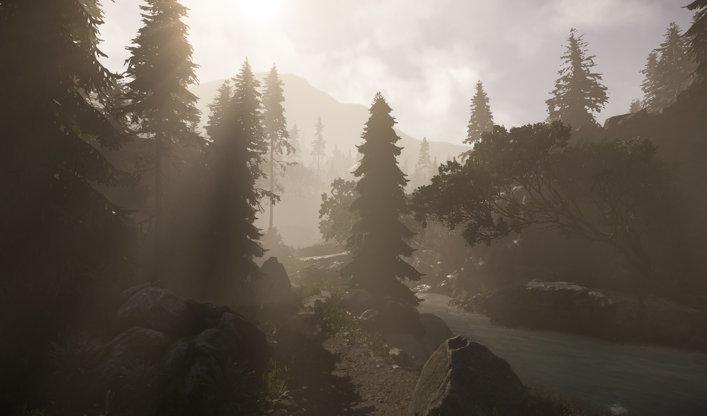
Table of Contents
Voxel-based Volumetric Fog consists of two parts;
- Ray-marching Volumetric Fog and
- Analytical Volumetric Fog.
Ray-marching Volumetric Fog handles all types of light and differing fog densities, while analytical Volumetric Fog handles sun light without dynamic shadow and exponential height fog density.
The area near to the camera is covered by ray-marching Volumetric Fog, while everything else is covered by analytical Volumetric Fog.
Volumetric Fog
To control the global fog density and color, enable the Volumetric Fog (see above) and modify the Volumetric Fog parameters found in the Volumetric Fog section in the Environment Editor:
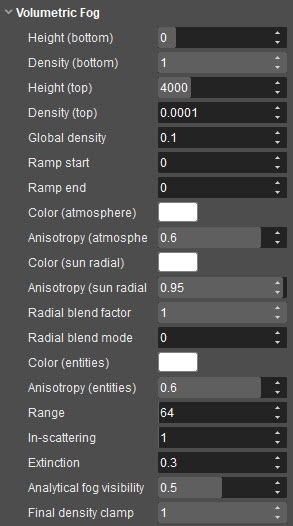
Sun Radial Scattering Setup
Anisotropy (atmosphere) and Anisotropy (radial) parameters essentially work in the same way. Anisotropy (atmosphere) should be used to produce an atmospheric fog that covers the whole sky; to achieve this set a low value (close to 0.0).
Anisotropy(radial) should be used to produce a bloom effect around the sun; to achieve this set a high value (close to 1.0). The Radial blend factor blends these two fog components to create various fog effects.
Setting the Radial blend mode to 1 and the Radial blend factor to 0.0 allows you to see sun atmosphere scattering only, hence checking the results of adjusting the Color(atmospheric) and the Anisotropy (atmosphereic) on your fog effect can easily be achieved.
The Anisotropy parameter allows you to control how much incoming light is scattered and in which direction, while setting the Anisotropy (atmosphere) parameter close to 0 makes the scattering more isotropic and therefore produces a uniform atmospheric fog.
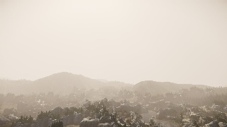
Setting Radial blend mode to 1 and Radial blend factor to 1.0 allows you to see sun radial scattering only, hence checking the results of adjusting the Color (radial) and Anisotropy (radial) on your fog effect can easily be achieved.
Adjusting the Anisotropy (radial) parameter to high (0.95) makes a scattering more anisotropic and therefore produces a bloom effect around the sun. 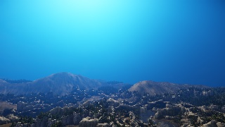
Finally, adjusting Radial blend factor parameter between 0 and 1 blends the sun atmosphere scattering and sun radial scattering, hence the final result becomes a more life-like atmospheric fog effect. 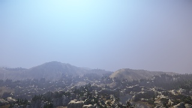
Fog Volume
To control the local fog density and color, put the Fog Volume entity into a level and add a fog density and color into the area.
For more information about the Fog Volume entity and its properties displayed in the image below, please see this page. 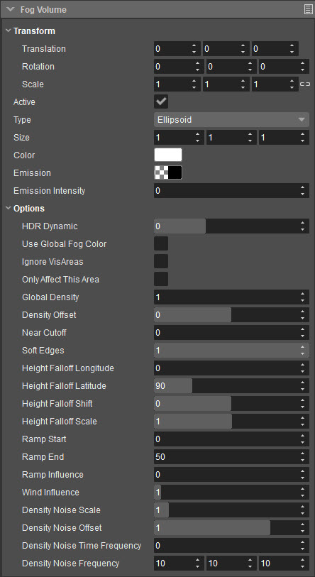
Fog Volume Entity Setup
With the introduction of control over the density noise some interesting shapes can be created within the Fog Volume entity. Below is a starting guide on how to configure the various parameters to achieve a fog bank effect.
- To begin with, setup a large volume (50m in XYZ), add some color, increase the wind influence (5) and ramp up the Global Density to a high value (100); this will make it easier to see what you are doing when you are changing the various parameters:
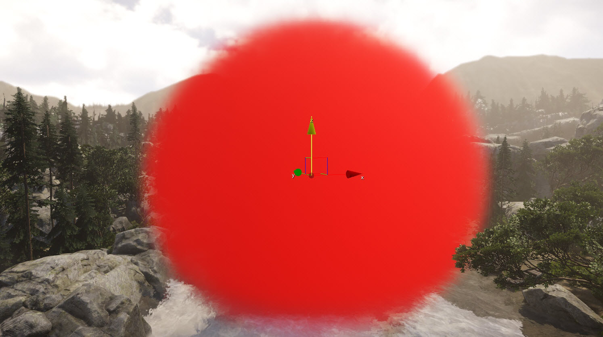
- Using the Density Noise Offset slider, reduce the value down into the negative range (-1.2). This will add noise into the volume and break up its solid shape into patches:
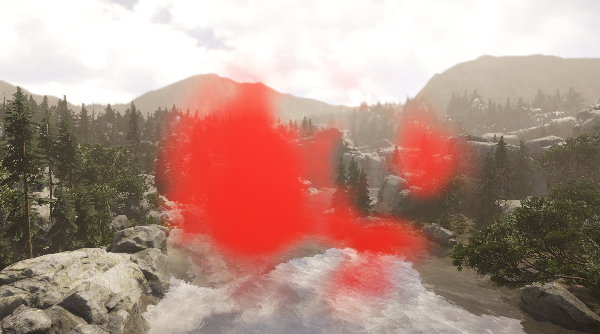
- Next adjust the Density Noise Scale slider (default 1). This will define the thickness of the individual patches of fog (referred to here as clouds), or if you look at it from the other direction it will define how big the spaces are in-between each cloud. Reducing the value to 0.5 will thin out the cloud density and increase the spacing between each cloud.
Density Noise Offset and Density Noise Scale work closely together, so adjusting one value usually means that the other will require a tweak to achieve the desired result: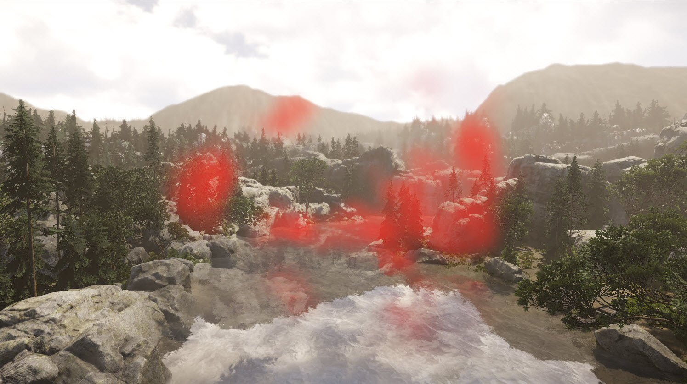
Adjusting the Density Noise Frequency parameter allows you to define how many fog patches you want. In our example we have increased the Z value from 10 to 100. This creates a layered effect within the volume simulating different fog patches stacked on top of each other. Adding higher values in X & Y would mean there would be more individual fog patches within the volume:
Having variations within the XYZ values will randomly breakup the fog patches into random sizes.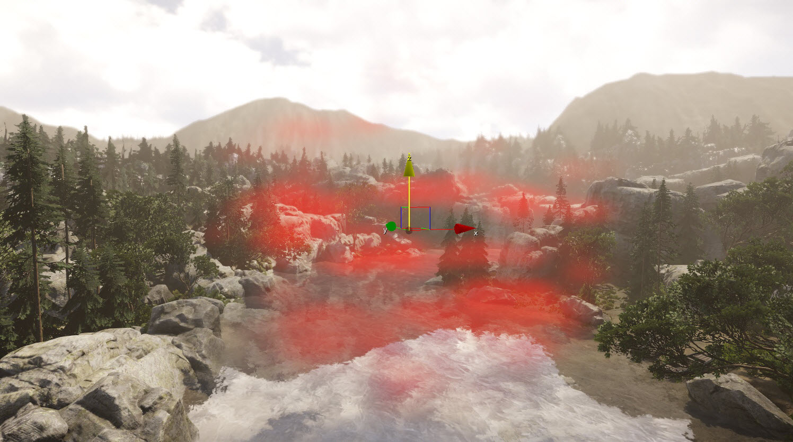
- Modifying the Density Noise Time Frequency allows the individual fog patches to morph into different shapes during the course of their lifetime. Keep this value low (0.2), otherwise they will morph too quickly and will look very unnatural. This is hard to represent in a static picture, so for consistency we have used a higher value (1) for the screenshot below:
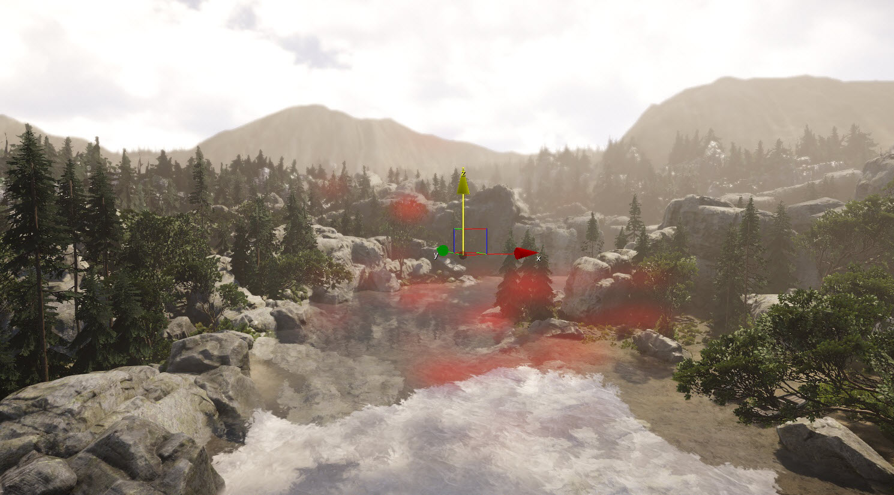
Finally, check the checkbox Use Global Fog Color. Doing so helps to achieve more natural blending in the scene and overrides the red colored fog; you should now default the fog back to white.
The screenshot below represents standing within the fog volume, looking horizontally which helps show how the additional values in Density Noise Frequency generate the various fog patches.In order for the screenshot below to demonstrate the final result, it was necessary for us to have a high fog density setting. During production you would not have the fog density set so high (normal levels used in production settings are in the range of 1-3), this ensures the fog effect you are trying to create is subtle/lifelike, e.g. like you would see around lakes or rivers. This does of course depend on how thick you want your fog volume to be.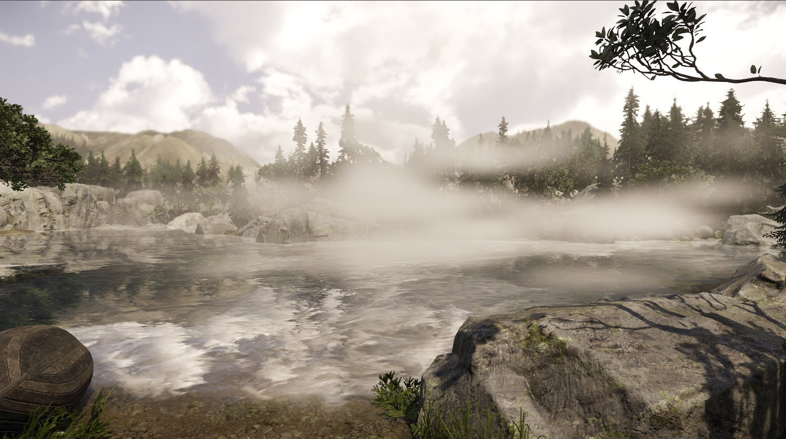
Flow Graph
The fog volume can be controlled through Flow Graph to modify the parameters at run-time. 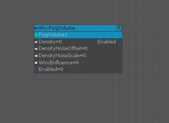
| Input | Description |
|---|---|
| Density | Controls the density of the fog volume entity. 0 → 100 |
| DensityNoiseOffset | Offsets the noise value for the density. Range -2 → +2 |
| DensityNoiseScale | Scales the noise value for the density. 0 → 10 |
| WindInfluence | Controls the influence of the global wind upon a fog volume. 0 → 20 |
| Enabled | Boolean. Controls the on/off state of the entity. |
| Output | Description |
| Enabled | Outputs the on/off state of the entity. |
Particle
You can put a particle emitter in your level to add a fog density to that area.
The following parameters found in the "Advanced" group of the Legacy Particle Editor window have been added for the control of fog density.
| Parameter | Description |
|---|---|
| Volume Fog | Enables fog density injection. |
| Volume Thickness | Adjusts volume thickness. |
The following parameters also affect fog density.
- Texture
- Alpha
- Alpha Clip
- Size
- Fill Rate Cost
- Plane Align Blend Distance
Tessellation parameter is not supported.
Light Entity
Light entity has three parameters related to the Volumetric Fog.
| Parameter | Description |
|---|---|
| Volumetric Fog | Enables the light to affect the Volumetric Fog. |
| Affects Volumetric Fog Only | Enables the light to only affect the Volumetric Fog and not to affect meshes etc. |
| Fog Radial Lobe | Adjusts the blend ratio of the main radial lobe (parallel to the eye ray) and side radial lobe (perpendicular to the eye ray). The direction of the main radial lobe depends on the Anisotropic parameter value used (found in the Environment Editor). |
On:
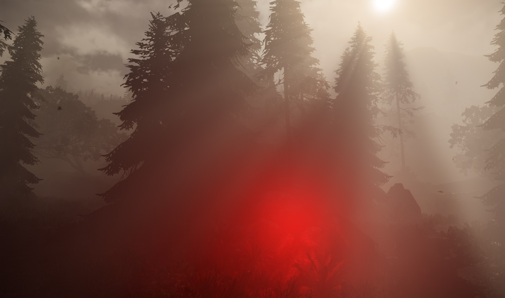
Off:
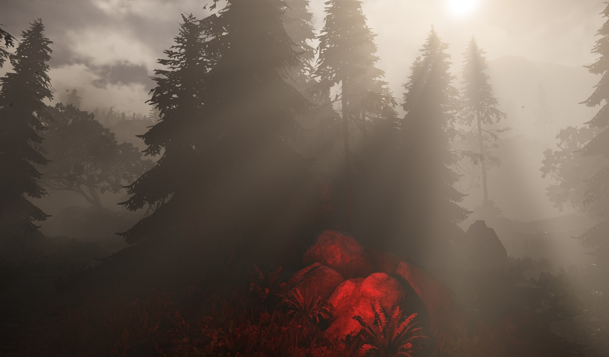
Notes
- Check if r_DeferredShadingTiled is set to greater than 0 - usually it is set to 1 or 2. (Default on PC is 2). This is required in order to run voxel-based Volumetric Fog as it shares internal data structures.
- Using Ramp Start and Ramp End in the Environment Editor causes performance issues (around 0.3ms on XBoxOne). Therefore, stick to the default values whenever possible.
- Planar Light with enabled Ambient Light parameter is supported, however Planar Light with disabled Ambient Light is not currently supported.
- Large values for Range in the Environment Editor are prone to causing fog flicker and light leaking behind a wall, unless that is, the r_VolumetricFogTexDepth is adjusted accordingly. The default settings are; r_VolumetricFogTexDepth=32 for Range=64. If you want to use larger ranges such as Range=256 and with same visual quality, then you need to set r_VolumetricFogTexDepth to 64. When Range=1024 is used, then r_VolumetricFogTexDepth=128 should be used.
| Range | r_VolumetricFogTexDepth |
|---|---|
| 64 | 32 |
| 256 | 64 |
| 1024 | 128 |
Console Variables
| CVar | Description | Values |
|---|---|---|
| e_VolumetricFog | Toggles Volumetric Fog on and off | 0 = off, 1 = on. |
| r_VolumetricFogTexScale | Adjusts the internal volume texture width and height. Screen resolution divided by this factor is applied to both. | This value should be more than or at least equal to 2. |
| r_VolumetricFogTexDepth | Adjusts the internal volume texture depth. | This value should be multiples of 4, but less than 252. |
| r_VolumetricFogReprojectionBlendFactor | Adjusts the blending factor of the temporal re-projection filter. Higher values cause less flicker, but more ghosting. | 0 = temporal re-projecton off. |
| r_VolumetricFogReprojectionMode | Sets the mode of ghost reduction for the temporal re-projection filter. | 0 = Conservative Mode. Ghost artifact appears when a light moves, but there is less flicker than in the Advanced Mode. 1 = Advanced Mode. Less ghost artifact but slightly more flicker than in the Conservative Mode. |
| r_VolumetricFogSample | Adjusts the number of sample points. | 0 = 1 sample point in a voxel. 1 = 2 sample points in a voxel. 2 = 4 sample points in a voxel. |
| r_VolumetricFogShadow | Adjusts the shadow sample count per sample point. | 0 = 1 shadow sample per sample point. 1 = 2 shadow samples per sample point. 2 = 3 shadow samples per sample point. 3 = 4 shadow samples per sample point. |
| r_VolumetricFogDownscaledSunShadow | Enables replacing sun shadow maps with downscaled shadow maps or static shadow map if possible. This reduces Volumetric Fog flicker for sun shadow. | 0 = disabled. 1 = replace first and second cascades with downscaled shadow maps. Others are replaced with static shadow map if possible. 2 = replace first, second, and third cascades with downscaled shadow maps. Others are replaced with static shadow map if possible. |
| r_VolumetricFogDownscaledSunShadowRatio | Sets downscale ratio for sun shadow maps. | 0 = 1/4 downscaled sun shadow maps. 1 = 1/8 downscaled sun shadow maps. 2 = 1/16 downscaled sun shadow maps. |
| r_VolumetricFogMinimumLightBulbSize | Adjusts the minimum size threshold for light attenuation bulb size for voxel-based Volumetric Fog. Small bulb size causes light flicker. | An acceptable value is between 0 to 2. Default setting is 0.4. |